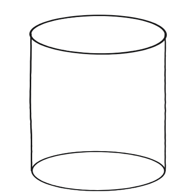
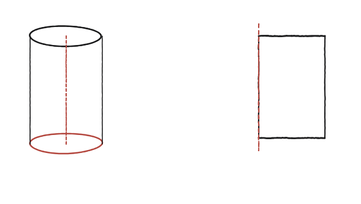
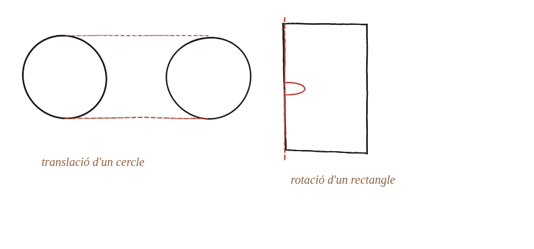

Se t'acudeixen dues maneres diferents de considerar un cilindre com el resultat d'un moviment?

Què hem de produir
Cal donar dues descripcions del cilindre com "una forma plana que s'ha mogut" — i que siguin genuïnament diferents, no la mateixa idea dita amb altres paraules. El pas clau és distingir, en cada cas, quina forma plana es mou i quin moviment fa exactament.
Primera manera: translació d'un cercle
Si es pren un cercle —un disc pla, com la base del cilindre— i es desplaça en línia recta, sense girar-lo ni canviar-ne la mida, perpendicularment al seu propi pla, el rastre que deixa al seu pas és exactament un cilindre. Aquest moviment és una translació: cap punt del cilindre queda fora del recorregut, i cap eix ni gir hi intervé.
Segona manera: rotació d'un rectangle
La segona manera és ben diferent: es pren un rectangle i es gira, no un desplaçament recte sinó una rotació, al voltant d'un dels seus propis costats com si aquest costat fos un eix fix. Cada punt del rectangle descriu una circumferència en girar (llevat dels que són sobre l'eix mateix, que es queden quiets), i el conjunt de totes aquestes circumferències —el que el rectangle escombra en completar la volta— és, també, exactament un cilindre. Val la pena notar que aquí s'omple el cilindre sencer: si el que es gira és només el costat oposat a l'eix, un segment, el que se'n traça és només la superfície lateral, buida per dins.

Que totes dues arriben al mateix sòlid
La primera manera —translació d'un cercle— no fa servir cap eix ni cap gir: és un moviment recte, de principi a fi. La segona —rotació d'un rectangle al voltant d'un dels seus costats— sí que en fa servir un: tot el moviment gira entorn d'aquell costat fix. Són, doncs, dues descripcions autènticament diferents, no una reformulació l'una de l'altra, i totes dues generen exactament el mateix cilindre final.

Un cilindre és, alhora, el rastre d'un cercle desplaçat en línia recta (translació, sense eix ni gir) i la superfície escombrada per un rectangle en girar al voltant d'un dels seus costats (rotació, amb eix fix). Són dues descripcions genuïnament diferents del mateix sòlid.
Comprovació
Aquí la comprovació no és numèrica: cal descriure, per a cadascuna de les dues maneres, quina és la forma plana que es mou i quin és exactament el moviment. Translació: un cercle, desplaçat en línia recta perpendicular al seu pla. Rotació: un rectangle, girat al voltant d'un dels seus costats com a eix. La segona manera —rotació d'una forma plana al voltant d'un eix— és la mateixa idea que fa funcionar el teorema de Pappus, que apareix més endavant com a eina general per calcular volums de sòlids de revolució.